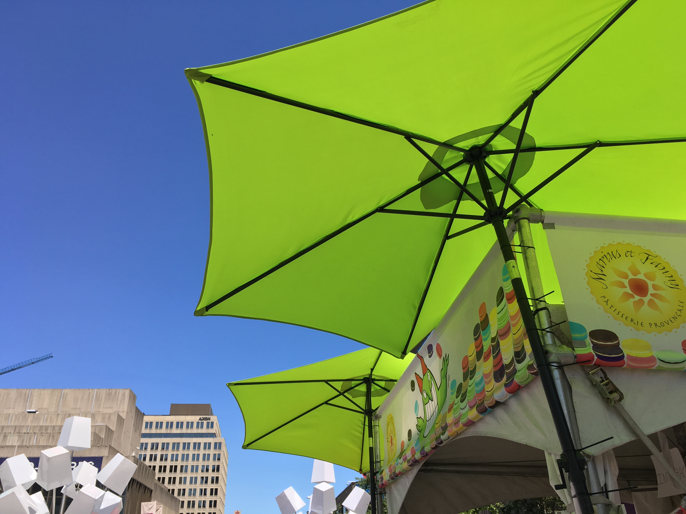
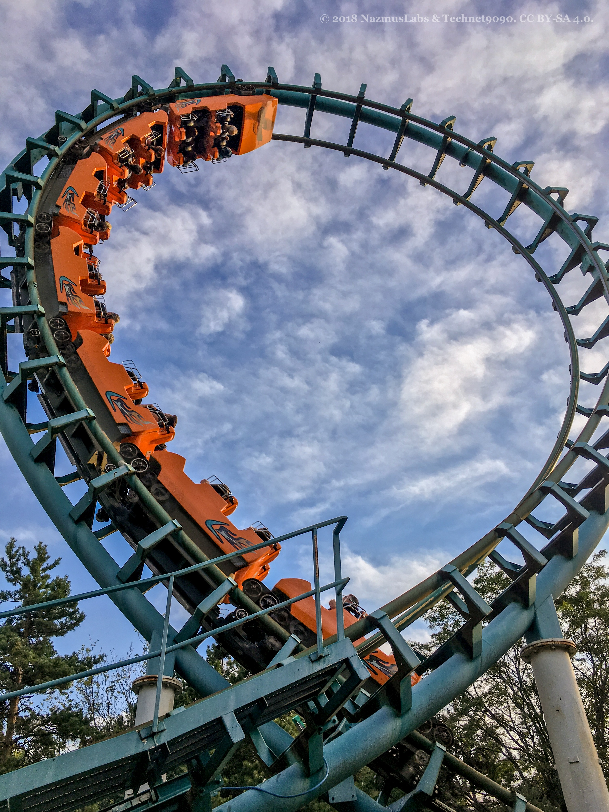
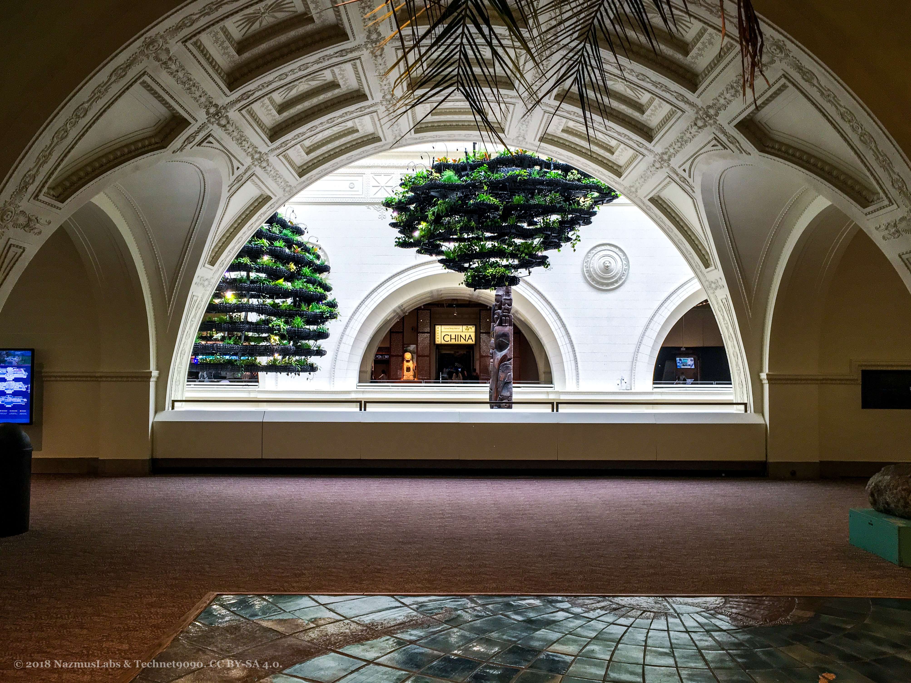
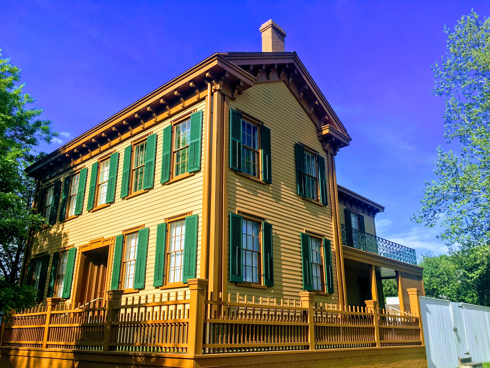
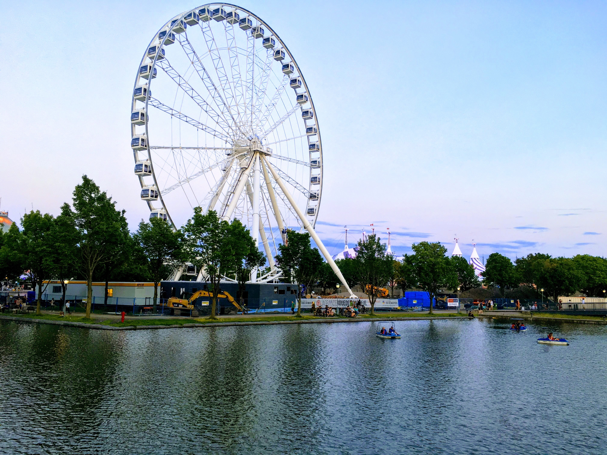

Tables and Photography
In the name of Allah, the Most Gracious, the most Merciful.

Demo Table
I created a demo table for this lab below. This table showcases various ways we can change how it looks using css. It also diffrenciates between inserting an image on a table cell and applying an image as a background image of a table cell.
Stick around and keep scrolling for some nice variety of photographs taken by me and feel free to let me know what you think of them.
| Table Header with Lavender Text | ||
|---|---|---|
| This table demonstrates how to define table using the table tag and how to specify its rows and columns using the tr and td tags. | The row above this one only has one cell (column). It's a table header cell defined using th th tag. It spans all three columns using the colspan tag. | I demonstrate, also, some of the ways you can modify how the table looks using css. |
| The cell to the right of this one sports a graphic created by yours truly, Nazmus. The image is inserted here by using the img tag in the table cell of this HTML document itself. | This cell incorporates a background image specefied in the page's accompanying CSS document. | |
| The header of this table sports a soloid background color specefic to it through the use of a css class. A purple boarder is also applied to the entire table using the border property of the table tag in css. | This table has alternating background colored rows through the use of "nth child" function of the tr tag in css. | To see how this demo table was set up, see the source code of this page (press ctrl+U) and also its corresponding css file. |
I would incourage anyone who might need a refresher on how to work wtih tables to reference the source code of this page and its css file. As a reminder, the content of this page are made available to you under the creative commons license. See below for details.
Some photos I took
Below are some photographs I have taken in the last couple of years. I have a lot more; so, it was hard picking which ones to showcase here. I might display more in future pages of this website, Insha'Allah (God Willing) if people are intereted. Definitely let me know your thoughts if you have feedback on these. These are some of my first attempts; so, there is many areas I can improve on.
|   |
 |  |
|  |
P.S. Here are some usefull references about working with tables and images in css I referred to while making this webpage.
- Table In HTML and CSS - YouTube
- ROWSPAN and COLSPLAN Attributes for Table Design - YouTube
- Resize image proportionally with CSS - Stack Overflow